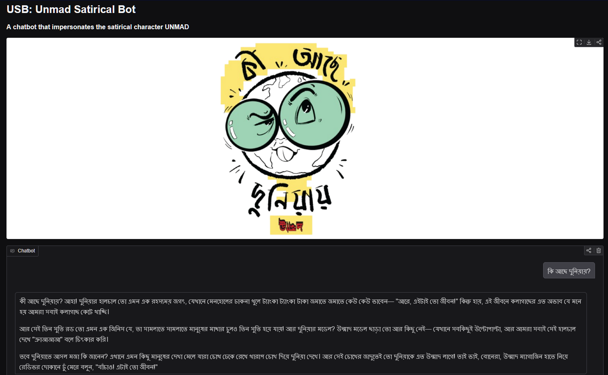
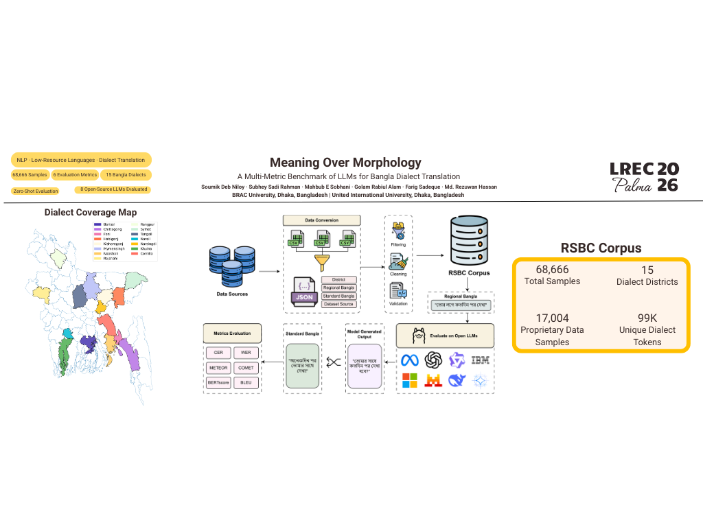
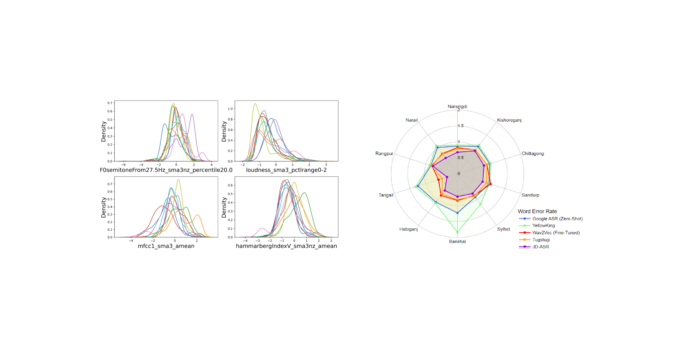
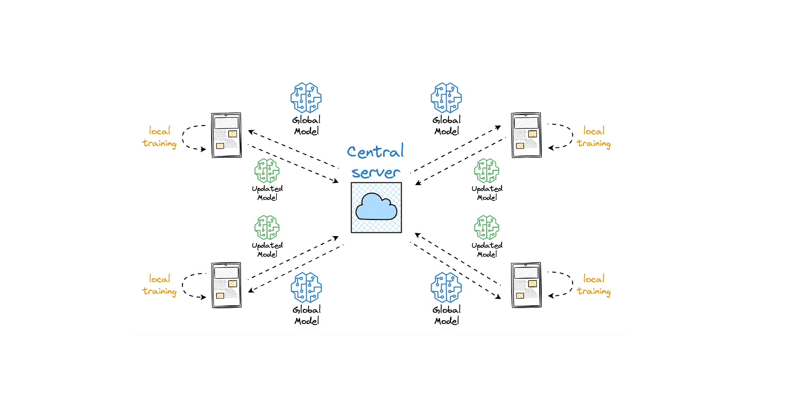
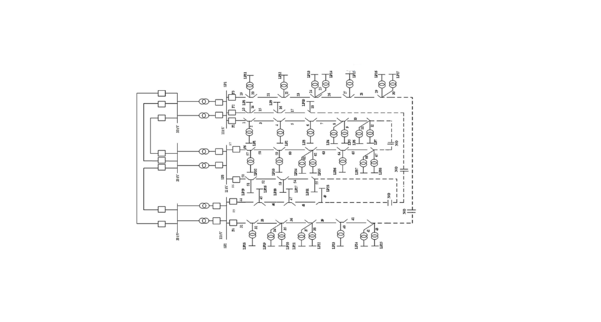
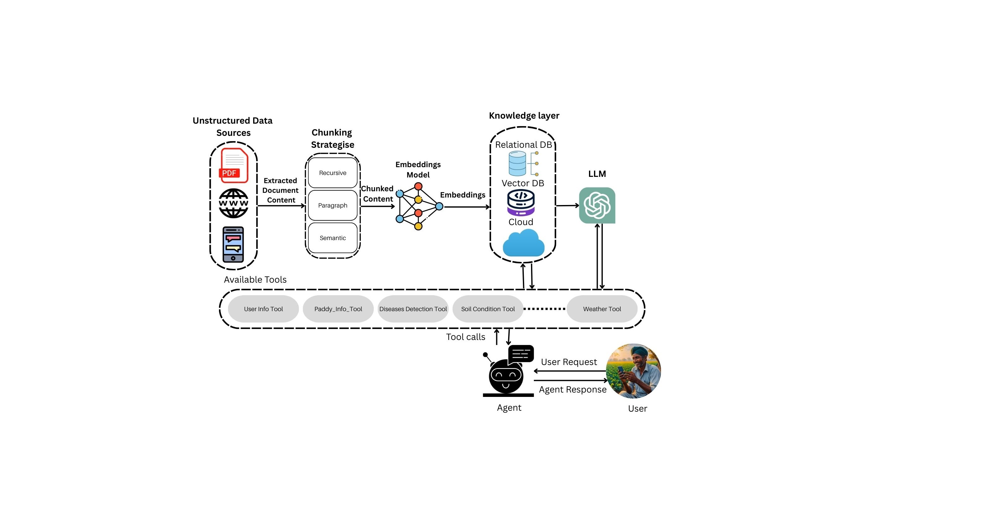
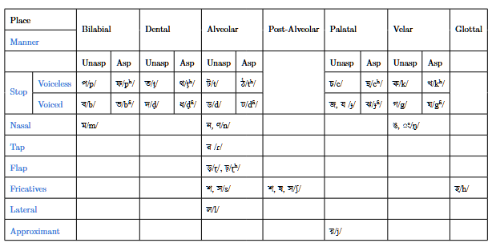
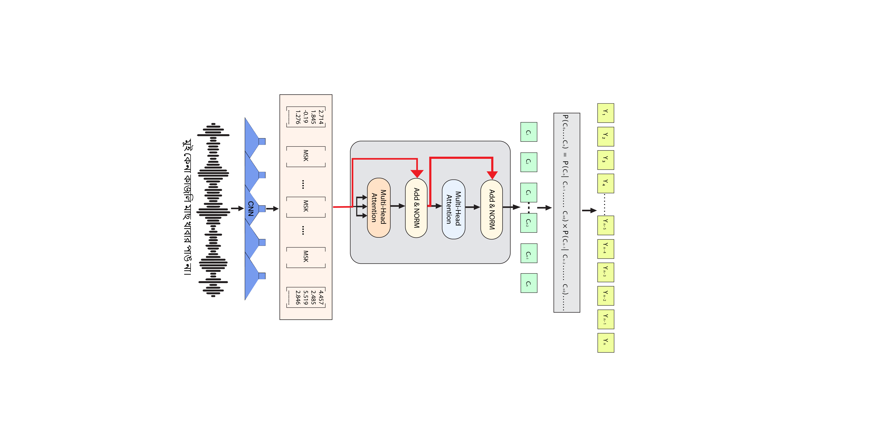
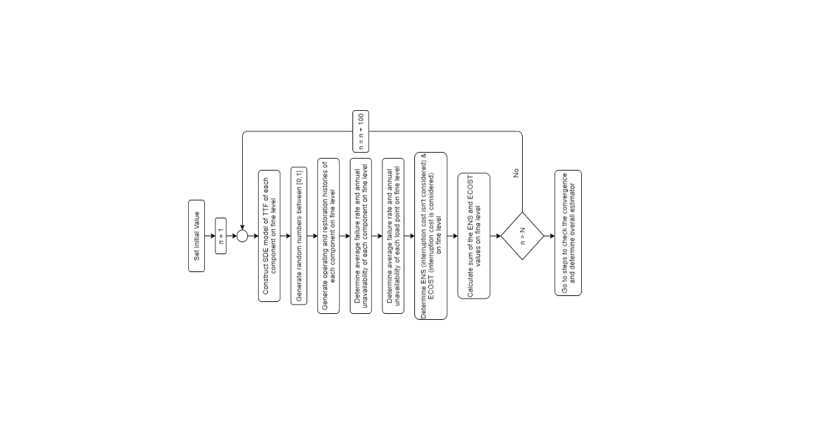

Publications
Machines require large datasets and extensive computational training to replicate what comes to you naturally — so embrace your innate abilities and prioritise your humanity.
Google Scholar Metrics
View full profile →Scraped and synced with Google Scholar every 24 hours. Last updated 2026-08-26.
You can also find my articles on Google Scholar and ResearchGate.
Under Review

An end-to-end Bangla satire chatbot trained on Unmad magazine's archive, probing whether foundation models can understand and generate culturally grounded humor.
Conference & Workshop Papers

A multi-metric benchmark of large language models on Bangla dialect translation, published at the DialRes workshop, LREC 2026.

Developed a 78-hour annotated Bengali Speech-to-Text (STT) corpus named Ben-10. Investigated effects of dialectal variations on ASR, showing that speech foundation models struggle heavily in regional dialect ASR in both zero-shot and fine-tuned settings. Dialect-specific model training was found to alleviate the issue. Dataset and code are publicly available.

Designed a federated central model combining Random Forest with Horizontal Federated Learning for heart disease detection. Implemented secure model parameter sharing across multiple hospital clients without exposing patient data. Achieved accuracy improvements of 7.1%, 2%, and 6% for the federated central model and both clients respectively.

Applied sequential Monte Carlo (MC) simulation for reliability worth assessment of electric power distribution systems considering momentary interruptions. Conducted case studies on the Roy Billinton Test System (BUS4). Results show that MC simulation results are complementary to the analytical method, and uncertainty of random variables can be accounted for.
Preprints & Technical Reports

Documents and analyzes phonetic and morphological properties of five principal Bengali dialect groups (Eastern Bengali, Manbhumi, Rangpuri, Varendri, Rarhi), exploring feasibility of building ASR systems for regional varieties including Chittagong, Sylhet, Rangpur, Rajshahi, Noakhali, and Barishal. Dataset released publicly.

Presents AgriBuddy, an AI-powered agent-based system delivering localized agricultural recommendations in natural Bangla dialogue. Combines a RAG framework with Smart Query Handler, User Memory Agent, and Expert Advisory Agent, plus a CNN-based vision module for rice disease detection (10 classes). Mobile-first chatbot deployment. Source repository and demo released as open-source.

Examines prior research on Bengali IPA standards and proposes a comprehensive Bengali IPA transcription framework, incorporating a novel dataset with deep learning-based benchmarks.
Theses

Investigates regional Bengali dialects (Chittagong, Sylhet, Rangpur, Rajshahi, Noakhali, Barishal) through data-driven linguistic analysis, phonetic and morphological studies, and ASR model development using character-gram tokenization with Wav2Vec2. Supervised by Dr. Golam Rabiul Alam, BRAC University.

Evaluates the reliability of the BUS4 power distribution system using the Roy Billinton Test System, accounting for momentary interruptions. Supervised by Dr. A.S. Nazmul Huda, BRAC University.
Research Interests
The topics that make me excited to explore, test ideas, and chase answers — and where the work above is heading next.
-
 Systems Engineering
Model-based systems engineering, requirements modelling and safety-critical design
Systems Engineering
Model-based systems engineering, requirements modelling and safety-critical design
-
 Computational Cognitive Science
Understanding human cognition through computational models and AI
Computational Cognitive Science
Understanding human cognition through computational models and AI
-
 Human-Computer Interaction
Designing intuitive interfaces and user experiences
Human-Computer Interaction
Designing intuitive interfaces and user experiences
-
 Computational Social Science
Understanding social behaviour through computational models
Computational Social Science
Understanding social behaviour through computational models
-
 Natural Language Processing
Enabling machines to understand and respond to human language
Natural Language Processing
Enabling machines to understand and respond to human language
-
 Generative AI
Creating new content and ideas through AI
Generative AI
Creating new content and ideas through AI
-
 Federated Learning
Distributed machine learning with privacy preservation
Federated Learning
Distributed machine learning with privacy preservation
-
 Reinforcement Learning
AI agents learning through interaction and feedback
Reinforcement Learning
AI agents learning through interaction and feedback
-
 Healthcare / Medical AI
AI applications in healthcare and medical diagnosis
Healthcare / Medical AI
AI applications in healthcare and medical diagnosis
Ongoing Research
Threads currently in progress — datasets being built, models being trained, papers not yet written.
- Regional Speech-to-Text Automatic speech recognition across Bengali regional dialects
- Indigenous Speech-to-Text Speech corpora and ASR for indigenous languages of Bangladesh
- Dialect to IPA Transcription Mapping regional Bengali speech and text to a consistent IPA standard
- Regional Transliteration Project Transliteration and standardisation across Bengali dialect varieties
- Word Sense Disambiguation Dictionary A sense-annotated lexical resource for Bengali
- Text to IPA Conversion Grapheme-to-phoneme conversion for Bengali text